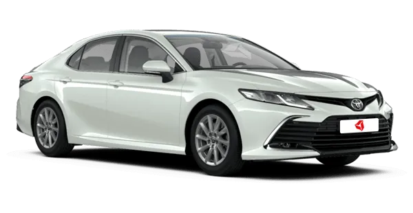

BMW X5 (G05) — четвёртое поколение знаменитого среднеразмерного кроссовера BMW X5. Выпуск модели был начат в ноябре 2018 года в Европе. Мощность двигателя: 600 л.с. Разгон до 100 км/ч: 3,9сек.
Цена:
15 000 000₽

Стильный дизайн с динамичными линиями кузова, эффектная форма переднего бампера, решетка радиатора с боковой серебристой окантовкой, новые цвета экстерьера и уникальный двухцветный окрас кузова для специальной серии Toyota Gazoo Racing - все это подчеркивает выразительный облик бизнес-седана. Мощность двигателя: 240 л.с. Разгон до 100 км/ч: 7,7сек.
Цена:
2 900 000₽

Skoda Octavia — это популярный чешский автомобиль (седан/лифтбек или универсал) среднего класса (C-segment), построенный на модульной платформе MQB. Известен своим просторным салоном, огромным багажником, высоким уровнем безопасности (5 звезд Euro NCAP) и широкой линейкой турбодвигателей. Мощность двигателя: 150 л.с. Разгон до 100 км/ч: 9,0сек.
Цена:
2 100 000₽